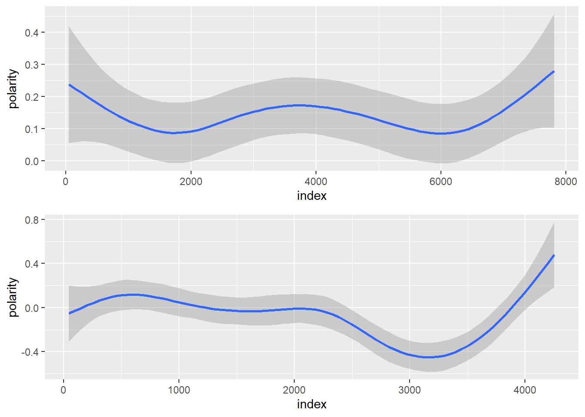

3 Text Analysis of Novels
3.1 Data
Downloading Novels ‘The Awakening’ and ‘The Aspern Papers’
awakening <- scan("http://www.gutenberg.org/files/160/160-0.txt", what="character", blank.lines.skip = TRUE, sep="\n")
aspern <- scan("http://www.gutenberg.org/files/211/211-0.txt", what="character", blank.lines.skip = TRUE, sep="\n")
awakening<- iconv(awakening, 'utf-8', 'ascii', sub='')
aspern<- iconv(aspern, 'utf-8', 'ascii', sub='')3.2 Text cleaning
awakening.begin <- which(awakening=="THE AWAKENING")[2]
awakening.end <- which(awakening=="*****") - 1
awakening.v<- awakening[awakening.begin:awakening.end]
aspern.begin <- which(aspern=="Macmillan and Co., 1888.")+1
aspern.end <- which(aspern=="End of the Project Gutenberg EBook of The Aspern Papers, by Henry James") - 1
aspern.v <- aspern[aspern.begin:aspern.end]3.3 Awakening:
- Cutting in chapters and corpus creation
awakening.v <- gsub("^I*(X|V)*I*$", "@@@", awakening.v)
awakening.string <- paste(awakening.v, collapse = " ")
awakening.chapters <- strsplit(awakening.string, "@@@ ")
awakening.df <- as.data.frame(awakening.chapters, stringsAsFactors = FALSE)
awakening.df <-awakening.df[2:38,1]
awakening.df <- as.data.frame(awakening.df)
colnames(awakening.df) <- "chapters"
awakening.docs <- Corpus(VectorSource(awakening.df$chapters))- Text preprocessing
toSpace <- content_transformer(function (x , pattern ) gsub(pattern, " ", x))
awakening.docs <- tm_map(awakening.docs, toSpace, "/")
awakening.docs <- tm_map(awakening.docs, toSpace, "@")
awakening.docs <- tm_map(awakening.docs, toSpace, "\\|")
awakening.docs <- tm_map(awakening.docs, content_transformer(tolower))
awakening.docs <- tm_map(awakening.docs, removeNumbers)
awakening.docs <- tm_map(awakening.docs, removeWords, stopwords("english"))
awakening.docs <- tm_map(awakening.docs, removePunctuation)
awakening.docs <- tm_map(awakening.docs, stripWhitespace)- WordCloud preparation and wordcloud graph
awakening.dtm <- DocumentTermMatrix(awakening.docs, control=list(weighting=weightTf))
awakening.m <- as.matrix(t(awakening.dtm))
awakening_v <- sort(rowSums(awakening.m),decreasing=TRUE)
awakening.d <- data.frame(word = names(awakening_v),freq=awakening_v)
head(awakening.d, 10)## word freq
## edna edna 287
## one one 194
## upon upon 190
## pontellier pontellier 180
## little little 148
## robert robert 148
## mrs mrs 145
## said said 143
## madame madame 126
## like like 124set.seed(1234)
wordcloud(words = awakening.d$word, freq = awakening.d$freq, min.freq = 1,
max.words=200, random.order=FALSE, rot.per=0.35,
colors=brewer.pal(8, "Dark2"))
3.4 Aspern
- Cutting in chapters and corpus creation
aspern.v <- gsub("^I*(X|V)*I*$", "@@@", aspern.v)
aspern.string <- paste(aspern.v, collapse = " ")
aspern.chapters <- strsplit(aspern.string, "@@@ ")
aspern.df <- as.data.frame(aspern.chapters, stringsAsFactors = FALSE)
aspern.df <-aspern.df[2:38,1]
aspern.df <- as.data.frame(aspern.df)
colnames(aspern.df) <- "chapters"
aspern.docs <- Corpus(VectorSource(aspern.df$chapters))- Text preprocessing
toSpace <- content_transformer(function (x , pattern ) gsub(pattern, " ", x))
aspern.docs <- tm_map(aspern.docs, toSpace, "/")
aspern.docs <- tm_map(aspern.docs, toSpace, "@")
aspern.docs <- tm_map(aspern.docs, toSpace, "\\|")
aspern.docs <- tm_map(aspern.docs, content_transformer(tolower))
aspern.docs <- tm_map(aspern.docs, removeNumbers)
aspern.docs <- tm_map(aspern.docs, removeWords, stopwords("english"))
aspern.docs <- tm_map(aspern.docs, removePunctuation)
aspern.docs <- tm_map(aspern.docs, stripWhitespace)- WordCloud preparation and wordcloud graph
aspern.dtm <- DocumentTermMatrix(aspern.docs, control=list(weighting=weightTf))
aspern.m <- as.matrix(t(aspern.dtm))
aspern_v <- sort(rowSums(aspern.m),decreasing=TRUE)
aspern.d <- data.frame(word = names(aspern_v),freq=aspern_v)
head(aspern.d, 10)## word freq
## miss miss 264
## tita tita 173
## said said 149
## know know 111
## old old 105
## dont dont 96
## made made 85
## little little 84
## see see 82
## one one 80set.seed(1234)
wordcloud(words = aspern.d$word, freq = aspern.d$freq, min.freq = 1,
max.words=200, random.order=FALSE, rot.per=0.35,
colors=brewer.pal(8, "Dark2"))
3.5 Commonality cloud and Comparison cloud
- Creation of a corpus out of the both texts
- Text preprocessing
toSpace <- content_transformer(function (x , pattern ) gsub(pattern, " ", x))
cc.docs <- tm_map(cc.docs, toSpace, "/")
cc.docs <- tm_map(cc.docs, toSpace, "@")
cc.docs <- tm_map(cc.docs, toSpace, "\\|")
cc.docs <- tm_map(cc.docs, content_transformer(tolower))
cc.docs <- tm_map(cc.docs, removeNumbers)
cc.docs <- tm_map(cc.docs, removeWords, stopwords("english"))
cc.docs <- tm_map(cc.docs, removePunctuation)
cc.docs <- tm_map(cc.docs, stripWhitespace)3.Comparison and Commonality cloud
cc.dtm <- DocumentTermMatrix(cc.docs)
cc.m <- as.matrix(t(cc.dtm))
colnames(cc.m)<- c("Awakening","Aspern")
comparison.cloud(cc.m,max.words = 100,min.frrandom.order=FALSE)

3.6 Sentiment timeline
1.Awakening
sent.awakening <- readLines("http://www.gutenberg.org/files/160/160-0.txt")
sent.awakening <-iconv(sent.awakening, 'utf-8', 'ascii', sub='')
awakening.corpus <- VCorpus(VectorSource(sent.awakening))
awakening.corpus <- tm_map(awakening.corpus, content_transformer(tolower))
awakening.corpus <- tm_map(awakening.corpus, removeNumbers)
awakening.corpus <- tm_map(awakening.corpus, removeWords, stopwords("english"))
awakening.corpus <- tm_map(awakening.corpus, removePunctuation)
awakening.corpus <- tm_map(awakening.corpus, stripWhitespace)
awakening.dtm <- DocumentTermMatrix(awakening.corpus)
awakening.tidy <- tidy(awakening.dtm)
awakening.tidy$count <-as.numeric(awakening.tidy$count)
colnames(awakening.tidy)[2]<- 'word'
awakening.tidy$document <- as.numeric(awakening.tidy$document)
nrc.joy <- subset(nrc, nrc$sentiment=="joy")
joy.words <- inner_join(awakening.tidy, nrc.joy)
joy.words <- count(joy.words, word)
bing <- get_sentiments("bing")
awakening.sentiment <- inner_join(awakening.tidy, bing)
awakening.sentiment <- count(awakening.sentiment, sentiment, index=document)
awakening.sentiment <- spread(awakening.sentiment, sentiment, n, fill=0)
awakening.sentiment$polarity <- awakening.sentiment$positive - awakening.sentiment$negative
awakening.sentiment$pos <- ifelse(awakening.sentiment$polarity >=0, "pos", "neg")
ggplot(awakening.sentiment, aes(x=index, y=polarity, fill=pos))+geom_bar(stat="identity", position="identity", width=1)
awakening.smooth <- ggplot(awakening.sentiment, aes(index, polarity))
(p2<-awakening.smooth + stat_smooth())
2.Aspern
sent.aspern <- readLines("http://www.gutenberg.org/files/211/211-0.txt")
aspern.corpus <- VCorpus(VectorSource(sent.aspern))
aspern.corpus <- tm_map(aspern.corpus, content_transformer(tolower))
aspern.corpus <- tm_map(aspern.corpus, removeNumbers)
aspern.corpus <- tm_map(aspern.corpus, removeWords, stopwords("english"))
aspern.corpus <- tm_map(aspern.corpus, removePunctuation)
aspern.corpus <- tm_map(aspern.corpus, stripWhitespace)
sent.aspern <-iconv(sent.aspern, 'utf-8', 'ascii', sub='')
aspern.dtm <- DocumentTermMatrix(aspern.corpus)
aspern.tidy <- tidy(aspern.dtm)
aspern.tidy$count <-as.numeric(aspern.tidy$count)
colnames(aspern.tidy)[2]<- 'word'
aspern.tidy$document <- as.numeric(aspern.tidy$document)
nrc.joy <- subset(nrc, nrc$sentiment=="joy")
joy.words <- inner_join(aspern.tidy, nrc.joy)
joy.words <- count(joy.words, word)
#bing <- subset(sentiments, sentiments$lexicon=='bing')[,-4]
aspern.sentiment <- inner_join(aspern.tidy, bing)
aspern.sentiment <- count(aspern.sentiment, sentiment, index=document)
aspern.sentiment <- spread(aspern.sentiment, sentiment, n, fill=0)
aspern.sentiment$polarity <- aspern.sentiment$positive - aspern.sentiment$negative
aspern.sentiment$pos <- ifelse(aspern.sentiment$polarity >=0, "pos", "neg")
ggplot(aspern.sentiment, aes(x=index, y=polarity, fill=pos))+geom_bar(stat="identity", position="identity", width=1)

- Merging Aspern and Awakening
g2 <- ggplotGrob(p2)
g3 <- ggplotGrob(p3)
g <- rbind(g2, g3, size = "first")
g$widths <- unit.pmax(g2$widths, g3$widths)
grid.newpage()
grid.draw(g)
3.7 Topic Modelling
Pick up 5 topics and try to make sense of the topics giving a label to them.
1.Awakening
top.mod.awakening.dtm <- DocumentTermMatrix(awakening.corpus, control = list(weighting=weightTf))
burnin = 1000
iter = 1000
keep = 50
set.seed(510)
top.mod.awakening.n <- nrow(top.mod.awakening.dtm)
top.mod.awakening.dtm <- top.mod.awakening.dtm[row_sums(top.mod.awakening.dtm > 0) > 1,]
top.mod.awakening.lda_basic.model<- LDA(top.mod.awakening.dtm, k = 5L, method = "Gibbs",
control = list(burnin = burnin, iter = iter, keep = keep, alpha = 1) )
top.mod.awakening.lda.topics <- as.matrix(topics(top.mod.awakening.lda_basic.model))
#top.mod.awakening.lda.topics
top.mod.awakening.lda.terms <- as.matrix(terms(top.mod.awakening.lda_basic.model, 10))
top.mod.awakening.lda.terms<- iconv(top.mod.awakening.lda.terms, 'utf-8', 'ascii', sub='')
#top.mod.awakening.lda.terms
awakening.top10termsPerTopic <- terms(top.mod.awakening.lda_basic.model, 10)
awakening.top10termsPerTopic <- iconv(top.mod.awakening.lda.terms, 'utf-8', 'ascii', sub='')
#awakening.top10termsPerTopic
colnames(awakening.top10termsPerTopic)<-c("Edna in her house/room"," Work, life and love - Leaving the papers after he/she died","Madame Edna - Mademoiselle Ratignolle - Robert","Emotions - Description of a face ","Mrs.Pontellier - Edna - Robert")
awakening.top10termsPerTopic## Edna in her house/room
## [1,] "one"
## [2,] "like"
## [3,] "never"
## [4,] "thought"
## [5,] "day"
## [6,] "might"
## [7,] "seemed"
## [8,] "children"
## [9,] "two"
## [10,] "felt"
## Work, life and love - Leaving the papers after he/she died
## [1,] "project"
## [2,] "work"
## [3,] "must"
## [4,] "gutenbergtm"
## [5,] "without"
## [6,] "new"
## [7,] "found"
## [8,] "many"
## [9,] "feeling"
## [10,] "full"
## Madame Edna - Mademoiselle Ratignolle - Robert
## [1,] "upon"
## [2,] "eyes"
## [3,] "face"
## [4,] "hand"
## [5,] "looked"
## [6,] "sat"
## [7,] "white"
## [8,] "night"
## [9,] "table"
## [10,] "took"
## Emotions - Description of a face Mrs.Pontellier - Edna - Robert
## [1,] "little" "pontellier"
## [2,] "madame" "mrs"
## [3,] "went" "said"
## [4,] "away" "edna"
## [5,] "old" "will"
## [6,] "edna" "know"
## [7,] "back" "time"
## [8,] "house" "come"
## [9,] "ratignolle" "good"
## [10,] "robert" "mademoiselle"awakening.topicNames <- apply(awakening.top10termsPerTopic, 2, paste, collapse=" ")
#awakening.topicNames- Aspern
top.mod.aspern.dtm <- DocumentTermMatrix(aspern.corpus, control = list(weighting=weightTf))
burnin = 1000
iter = 1000
keep = 50
set.seed(510)
top.mod.aspern.n <- nrow(top.mod.aspern.dtm)
top.mod.aspern.dtm <- top.mod.aspern.dtm[row_sums(top.mod.aspern.dtm > 0) > 1,]
top.mod.aspern.lda_basic.model<- LDA(top.mod.aspern.dtm, k = 5L, method = "Gibbs",
control = list(burnin = burnin, iter = iter, keep = keep, alpha = 1) )
top.mod.aspern.lda.topics <- as.matrix(topics(top.mod.aspern.lda_basic.model))
#top.mod.aspern.lda.topics
top.mod.aspern.lda.terms <- as.matrix(terms(top.mod.aspern.lda_basic.model, 10))
top.mod.aspern.lda.terms<- iconv(top.mod.aspern.lda.terms, 'utf-8', 'ascii', sub='')
#top.mod.aspern.lda.terms
aspern.top10termsPerTopic <- terms(top.mod.aspern.lda_basic.model, 10)
aspern.top10termsPerTopic <- iconv(top.mod.aspern.lda.terms, 'utf-8', 'ascii', sub='')
#aspern.top10termsPerTopic
colnames(aspern.top10termsPerTopic)<-c("Home - Seeing somebody - description of eyes - leaving","Jeffrey","Tita","Aunt","Time - Woman - Venice")
aspern.top10termsPerTopic## Home - Seeing somebody - description of eyes - leaving Jeffrey
## [1,] "went" "project"
## [2,] "came" "gutenbergtm"
## [3,] "house" "work"
## [4,] "back" "papers"
## [5,] "face" "may"
## [6,] "looked" "almost"
## [7,] "took" "works"
## [8,] "away" "electronic"
## [9,] "look" "jeffrey"
## [10,] "put" "aspern"
## Tita Aunt Time - Woman - Venice
## [1,] "" "might" "old"
## [2,] "miss" "come" "one"
## [3,] "" "little" "made"
## [4,] "tita" "way" "never"
## [5,] "said" "aunt" "time"
## [6,] "know" "even" "long"
## [7,] "dont" "take" "great"
## [8,] "think" "make" "still"
## [9,] "oh" "idea" "woman"
## [10,] "bordereau" "told" "upon"3.8 Main points of interpretation:
The most common words are names of characters such as Edna, Tita and Mrs.Pontellier.
According to the sentiment analysis, Awakening novel is slightly from the beginning to the end. On the other hand, Aspern has a slight drop in the negative sentiment, but the end is positive.
Awakening is as twice as longer text than Aspern.
Due to lemmatization could not address the time of speaking (wheater it is told in past or future)
Words “said”,little“,”think“,”house“,”good“,”like“,”one“,”come“,”back“,”thought" are the most common.